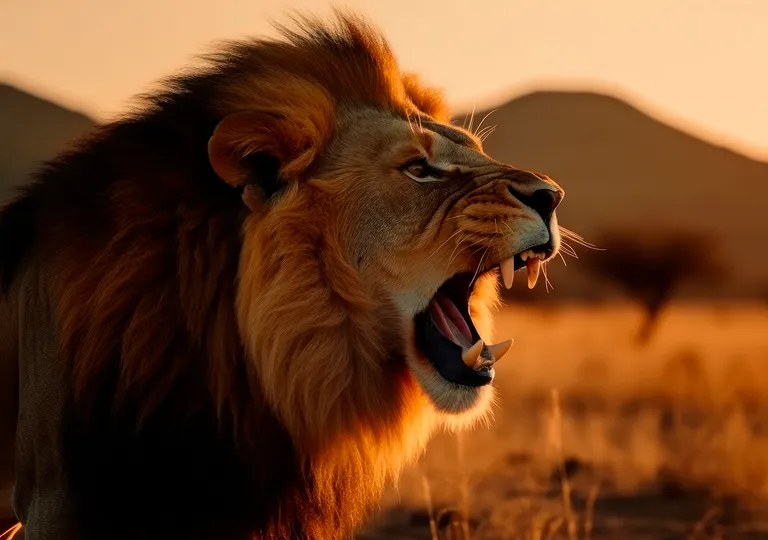

Leon
El león (Panthera leo) es un mamífero carnívoro de la familia de los félidos y una de las cinco especies del género Panthera. Los leones salvajes viven en poblaciones cada vez más dispersas y fragmentadas del África subsahariana (a excepción de las regiones selváticas de la costa del Atlántico y la cuenca del Congo) y una pequeña zona del noroeste de India (una población en peligro crítico en el parque nacional del Bosque de Gir y alrededores), habiendo desaparecido del resto de Asia del Sur, Asia Occidental, África del Norte y la península balcánica en tiempos históricos. Hasta finales del Pleistoceno, hace aproximadamente diez mil años, de los grandes mamíferos terrestres, el león era el más extendido tras los humanos. Su distribución cubría la mayor parte de África, gran parte de Eurasia, desde el oeste de Europa hasta la India, y en América, desde el río Yukón hasta el sur de México
